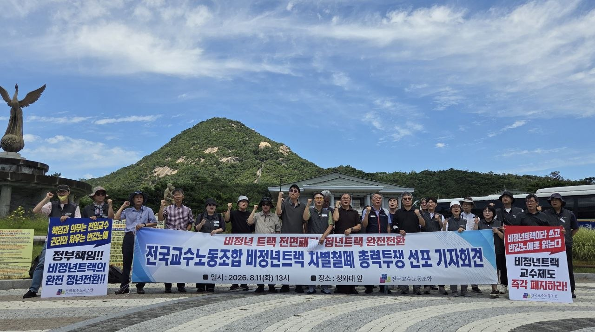

“비정년트랙 철폐, 국회 입법 논의 본격 착수!”
10월 30일 국회 의원회관서 입법 및 제도 정비 토론회 개최
특별기금 모금운동과 11월 14일 전국교수대회로 총력 결집
대학 사회 내 대표적 불평등 구조인 ‘비정년트랙 전임교원 제도’를 근본적으로 철폐하기 위한 우리 노동조합의 투쟁이 청와대 앞 릴레이 시위에 이어 국회 내 본격적인 입법·제도 정비 논의로 대상을 넓혀가고 있다.
우리 노동조합은 비정년트랙 제도 철폐와 정년트랙 완전 전환을 위한 사전 단계로, 오는 10월 30일(목) 오전 9시 국회의원회관 제3간담회의실에서 국회 정책 토론회 및 입법 간담회를 개최한다. 국회 기후에너지환경노동위원회 김주영 의원실 및 관련 의원실과 공동 주최하는 이번 자리는 국회 상임위 의원들과의 간담회 및 구체적 입법 제안 회의를 함께 진행한다. 이번 토론회에서는 비정년트랙 차별 실태, 정년트랙 전환 현장 사례 분석, 정부책임형 전환 방안 및 예산 확보 방안 등 3개 핵심 주제 발표가 진행된다.
아울러 임시대의원대회 결정에 따라 ‘비정년트랙 철폐 특별기금 모금운동’도 적극 추진된다.
10월 30일 국회 토론회와 특별기금 모금을 통해 모인 동력은 11월 14일 서울 파이낸스센터 앞 ‘2026 전국교수대회’ 총력 집결로 이어질 예정이다.
“차별 철폐와 교권 회복, 국회 입법과 현장 투쟁으로 완성합시다!”
국회 토론회와 특별기금 모금, 11월 14일 전국교수대회까지 조합원 동지 여러분의 적극적인 동참과 현장 결집을 부탁드립니다!

|